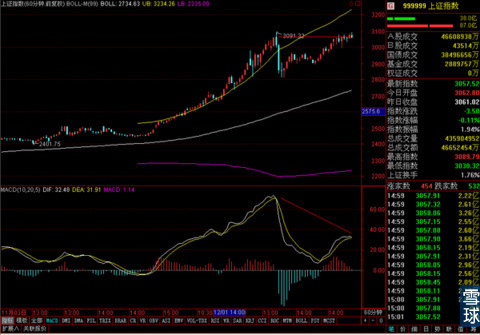
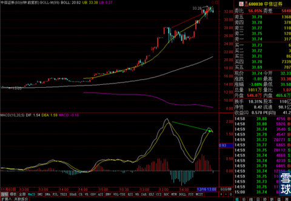
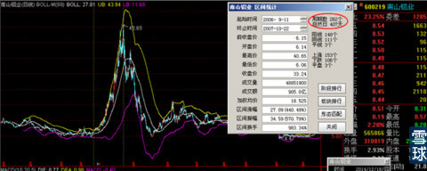
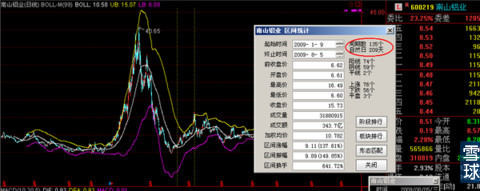

今天晚上要出去吃饭，所以就不多写了，捡重要的事情说几句。
之前判断大盘在连续暴涨之后，不会马上出现V字型反转。前几天有判断大盘在15分钟线上做三角形整理之后，短期还有上攻能量。但是到今天尾盘，上攻能量被消耗的差不多了。
而且60分钟线走势稍有不乐观的迹象，

股指期货收盘时的走势在15分钟线上，已经低于MA20的达到两条K线了，如果明天早上开盘出来MA20在股指期货和上证指数两边都不能翻上MA20，那么短期回调的概率将会非常大。
同时最近有风格转换的征兆，银行和券商在60分钟线上都有头部迹象。所以最近还是选择谨慎一些比较好。

如果大盘在之后的几个交易日真的出现幅度比较的回调的话，那么之前提示大家加自选留着观察的几个防御性股票，可能会出现比较好的建仓机会。
我在之前已经分两笔买入了南玻A，但是今天受大股东减持的影响，价格有所走低，在继续调整的过程中，我可能根据情况再次大比例加仓。
同时关注潍柴动力和中兴通讯是不是也会出现比较好的机会。如果有我会在专栏里说明。
至于选择长线持有银行股和类似南山铝业，鞍钢股份的投资者，可以暂时不动，静待长期收益。毕竟这几只股票短期可能随大盘调整，但是依旧低于净资产水平，安全性还是比较充分的。
最近有小伙伴耐不住性子，追问我南山铝业之类的股票怎么处理。这个我要说的是，要是真耐不住性子，特别想出的话，也不必勉强硬拿着。以免调整到短期低点出现的时候，耐心崩溃，在短期最低点上出手，之后看着上涨再往回追。
不过给大家看一下南山铝业上一次跌破净资产之后遇到大牛市的走势，

07年大牛市南山铝业真正走到头部的时候是400多个自然日，

四万亿行情的时候，走到顶点用了200多个自然日。
如果觉得牛市可以已经结束了的，可以选择现在离场。如果觉得牛市现在依然处于开始阶段，不用我说什么，大家也知道该怎么做吧？
还是那句话，如果真是牛市，绝对不可能一两个月就走完的。涨涨跌跌本来就是股市的常态。我该说的都说了，剩下的事，就看大家自己的判断和选择了。
 |
今天晚上要出去吃饭，所以就不多写SaiLv 2014-12-18 15:50:05 |
Copyright © 1996-2014 SINA Corporation All Rights Reserved.